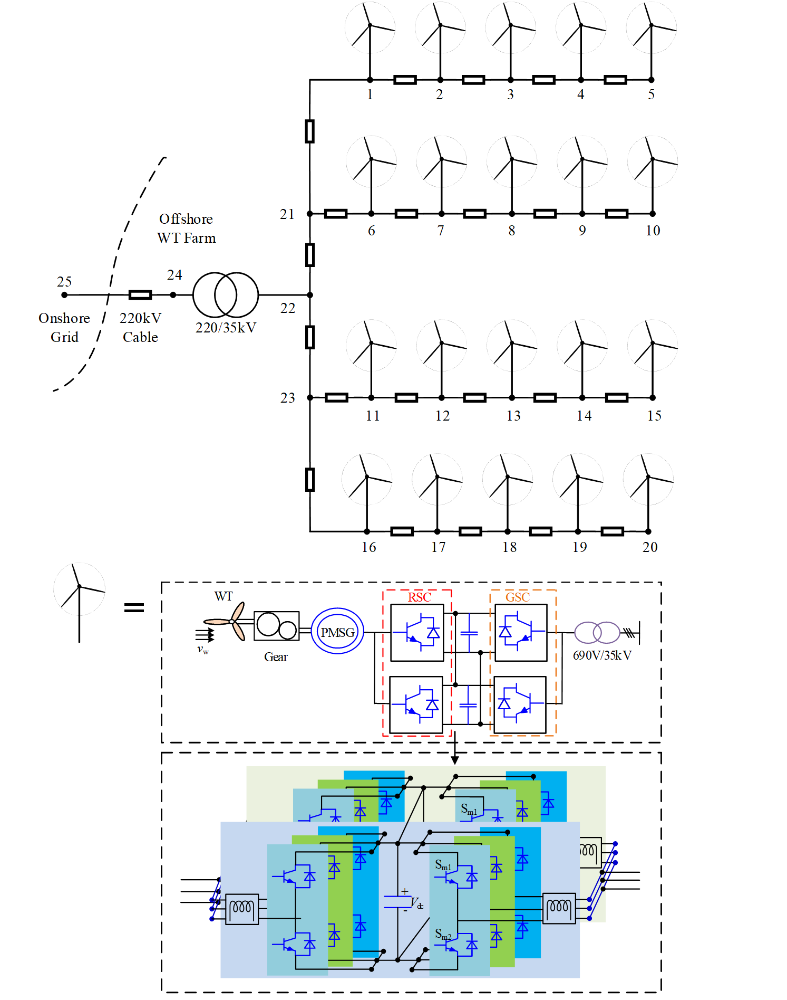

Home / Project List / Multi-Agent DRL
Deep Reinforcement Learning (DRL) - Guided Offshore Wind Farm Voltage Control
Undergraduate Thesis Project Supervisor: Prof. Hui Li Lab: State Key Laboratory of PES
-
Applied DRL to minimize the Average Voltage Deviation (AVD) of the offshore wind farm; the work was awarded the outstanding undergraduate thesis of CQU (top 1.5% in the university)
-
Built reactive power-voltage optimization model and formulated it as a Markov Decision Process; established the agents’ actor & critic’s Deep Neural Network and the interactive environment of RL; trained the agents with adapted Deep Deterministic Policy Gradient (DDPG) and Multi-Agent DDPG
-
Decreased AVD by 11.48 % after adding the forward difference of active power into observation; decreased AVD to 5.4×10-4 p.u. and 3.6×10-4 p.u. using policy trained by DDPG-based and Multi-Agent DDPG-based method respectively, which means the proposed multi-agent-based method improves the control performance by 33.33 %
- A Brief Introduction to My Thesis (pdf)
- DDPG source code
- MADDPG source code
 |
 |
The structure of the wind farm

The multi-agent DDPG-based approach

Result
Comparation of proposed multi-agent approch and normal DDPG